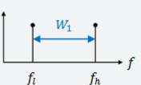
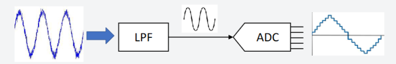

Analog to Digital Converters
Sampling Rate
Sampling rate (or sampling frequency) refers to the number of samples taken per second from an analog signal to convert it into a digital signal.
Nyquist Theorem:
- According to the Nyquist-Shannon sampling theorem, the sampling rate must be at least twice the maximum frequency present in the analog signal to accurately reconstruct the signal.
Bandwidth
Bandwidth is the range of frequencies within a given signal.

In ADC context, bandwidth typically refers to the range of frequencies that the ADC can accurately sample and digitize. Realize this is NOT the standard definition found in other electronic fields.
Anti-Aliasing Filters:
- Usually placed before the ADC to ensure that the input signal bandwidth does not exceed half the sampling rate.
- Usually a low pass filter

Signal-to-Noise Ratio (SNR)
Signal-to-Noise Ratio (SNR) is an error metric used to measure the quality of the ADC output.
Mathematical Representation
- Let the error between ADC input \( V(t) \) and digital output \( V_q(t) \) be:
- The SNR is defined as:
Importance
- Higher SNR means better ADC performance and less quantization error.
SNR for an N-bit ADC
- For an N-bit ADC given a full-scale sine wave input, the SNR in decibels is:
- This is often simplified as approximately 6 dB per bit.
Example - Number of ADC Levels
- For an 8-bit ADC:
Example – Step-size of ADC Levels
-
Question: How many volts does each level step-size represent for an 8-bit ADC ranging from −1 V to +1 V?
-
Calculation:
Note: Amplitude \( A = 1\,\text{V} \), hence input voltage range is \( 2A = 2\,\text{V} \).
Improving SNR
- Use a higher number of bits (higher resolution ADC).
- Amplify the input signal to fully utilize the ADC input range.
Required Amplification and Input Offset Considerations
Required Amplification
Scenario (i)
- If you can guarantee the peak-to-peak voltage of the original signal is \(\bar{V}_{sig}\), then the desired gain is:
- Example: If the ADC range is 0 V to 5 V and \(\bar{V}_{sig, p-p} = 20\,\text{mV}\), then:
Scenario (ii)
- If you cannot guarantee the peak-to-peak voltage of the original signal, you should leave some 'headroom' to avoid overflow, which is worse for SNR.
- Typically, amplify the input signal to fill 1/8 to 1/2 of the ADC's input range.
Input Offset Considerations
- Often the input signal is both positive and negative.
- The ADC input typically expects only positive inputs.
- Therefore, a DC offset must be applied.
Example:
- A full-scale signal might be represented as:
-
If the original signal is \( v(t) = 0.004\sin(\omega t) \), you need to:
- Apply a DC offset.
- Amplify the signal.
-
Different circuits and methods can achieve this for amplification and DC offset.
Evaluating the Transfer Function

Gain-Bandwidth Product (GBP)
The Gain-Bandwidth Product (GBP) is a key performance metric of an operational amplifier that defines the trade-off between gain and bandwidth. It states that for a given operational amplifier, the product of the closed-loop gain and the bandwidth remains constant.
- This means that increasing the gain will reduce the available bandwidth and vice versa.
Example Calculation
- Suppose an op-amp has a GBP of 10 MHz.
- If it is configured with a gain of 400, the bandwidth can be estimated as:
- This low bandwidth may limit high-frequency applications.
Improving Bandwidth with Multiple Stages
- Instead of using a single-stage amplifier with a gain of 400, consider using two cascaded amplifiers, each with a gain of 20.
- If both amplifiers have a GBP of 10 MHz:
- This significantly increases the bandwidth compared to a single-stage design.
Practical Considerations
- Higher gain configurations lead to reduced bandwidth, affecting high-speed applications.
- Using multiple amplifier stages distributes gain and helps maintain higher bandwidth.
- Important for ADC signal conditioning to ensure accurate data acquisition.
HiLetgo ADS1256 5V 8 Channel 24 Bit ADC Data Acquisition Board Module
The HiLetgo ADS1256 is a high-precision, 24-bit analog-to-digital converter (ADC) data acquisition module. It provides excellent resolution and accuracy for analog signal measurement, suitable for various precision measurement applications.
- Resolution: 24-bit ADC providing extremely fine quantization.
- Channels: 8 single-ended or 4 differential analog input channels.
- Operating Voltage: 5V operation, compatible with most microcontrollers and development boards.
- High Precision: Designed for high-precision applications with low noise and high stability.
- Data Rate: Programmable data rates up to 30,000 samples per second (30 kSPS).
The Good: - High sampling rate
The Bad: - Works at 5V, too high for many gpios. Had to buy SN74AHCT125N to use for the teensy 4.0 and Jetson Nano